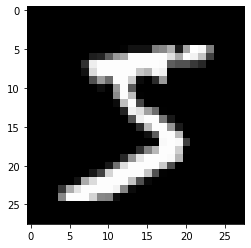
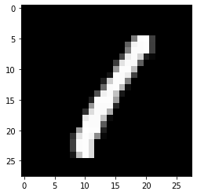
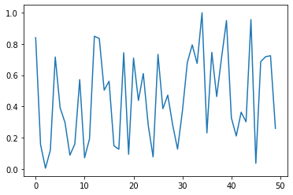
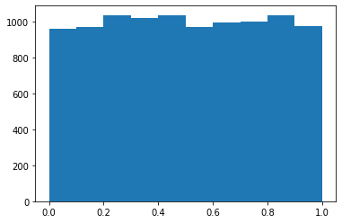

from pathlib import Path
import pickle, gzip, math, os, time, shutil, matplotlib as mpl, matplotlib.pyplot as pltWriting stable diffusion from scratch
fastaipart2
Stable-Diffusion
All credit goes to www.fast.ai. All mistakes are mine. In the foundation series, I only write about part of the lecture that is related to writing stable difussion from scratch.Jeremy also talked about the big picture of the stable diffusion model. I will write about those in the big picture series of my blog posts.Almost all of the stuff in the subtitle from lectures.
Matrix multiplication from foundations
It’s going to require some serious tenacity and a certain amount of patience,but I think you’re going to learn a lot.A lot of folks I’ve spoken to have said thatprevious iterations of this of the course is like the best course they’ve ever done, and this one’s going to be dramatically better than any previous version we’ve done of this. So hopefully you’ll find that the the hard work and patience pays off. So the goal is to get to stable diffusion from the foundations, which means we have to define what are the foundations. So I have decided to define them as follows : We’re allowed to use Python, we’re allowed to use the Python standard library. So that’s all the stuff that comes with Python by default we’re allowed to use matplotlib because I couldn’t be bothered creating my own plotting library and are allowed to use Jupyter notebooks and nbdev, which is something that creates modules from notebooks. So basically what we’re going to try to do is to yeah, rebuild everything starting from this foundation. Now to be clear, what we are allowed to use are the libraries Once we have re-implemented them correctly. And so if we if we re-implement something from NumPy or from PyTorch or whatever, we’re then allowed to use the Numpy or PyTorch or whatever version, sometimes we’ll be creating things that haven’t been created before, and that’s then going to be becoming our own library and we’re going to be calling that Library Mini AI. So we’re going to be building our own little framework as we go.
The foundations we’ll assume throughout this course are:
- Python
- matplotlib
- The Python standard library
- Jupyter notebooks and nbdev
So, for example, here are some inputs and these inputs all come from the Python standard library, except for these two. Now, to be clear, one challenge we have is that the models we use in stable diffusion, what trained on millions of dollars worth of equipment per month, which we don’t have the time or money. So another we’re going to do is we’re going to create smaller, identical, but smaller versions of them. And so once we’ve got them working, well, then be allowed to use the big Pre-Trained versions. So that’s the basic idea. So we’re going to have to end up with our own VIE our own UNIT, our own clip encoder and, so forth. To some degree. I am assuming that you’ve completed part one of the course to some degree I will cover everything, at least briefly. But if I cover something about deep learning too fast for you to know what’s going on and you get lost, go back and watch part one or go and, you know, Google for that term for stuff that we haven’t In part one, I will go over it very thoroughly and carefully. All right. So I’m going to assume that, you know, the basic idea that which is that we’re going to need to be doing some matrix multiplication.
So we’re going to try to take a deep dive into matrix multiplication today and we’re going to need some input data. And I quite like working with MNIST data, MNIST is hand-written digits. It’s a classic data set they are 28 by 28 pixel grayscale images and so we can download them from this URL. So we use the path libs path object a lot. It’s got part of Python and it basically takes a string and turns it into something that you can treat as a path. For example, you can use slash to mean this file inside this subdirectory. So this is how we create a path object path objects have for example a make directory mkdir method. So I like to get everything set up, but I want to be able to rerun this so lots of times and not have it like give me errors if I run it more than once, if I read a second time, it still works. And in that case that’s because I put this exist_ok = True. How did I know that? I can say because otherwise would try to make the directory. It would already exist in a given error. How do I know what parameters I can pass to make? I just press shift tab. And so when I hit shift tab, it tells me what options there. If I press it a few times, it’ll actually puppet down at the bottom of the screen. Just to remind me I can press escape to get rid of it. Or you can just or else you can just hit tab inside and it’ll list all the things you can type as parametors. As you can see. All right. So we need to grab this URL. And so Python comes with something for doing that, which is the URL lib library that’s part of Python that has something you I will retrieve and something which I’m always a bit surprised is not widely used as people are reading the Python documentation. So you should do that a lot. So if I click on that, here is the documentation for urlretrive, I will retrieve and so I can find exactly what it can take and I can learn about exactly what it does.So I yeah, I read the documentation from the Python docs for every single method I use and I look at every single option that it takes and then I practice with it and to practice with it, I practice inside Jupyter. So if I want this import on its own, I can hit control shift hyphen and it’s going to split it into two cells and then I’ll hit ALT + Enter or Option Enter so I can create something underneath so I can type urlretrieve shift tab. And so there it all is if I’m like way down somewhere in in the notebook and I have no idea where urlretrieve comes from, I can just hit shift enter and it actually tells me exactly where it comes from. And if I want to know more about it, I can just hit question mark shift enter and it’s going to give me documentation and most of all, second question mark and it gives me the full source code and you say it’s not a lot. You know, reading the source code of Python standard library stuff is often quite revealing and you can see exactly how they do it.
We use MNIST (hand-written digits) as our data. It is a classic 28 by 28 pixcel data set. http://yann.lecun.com/exdb/mnist/ We can download them from GitHub URL.
Get data
MNIST_URL='https://github.com/mnielsen/neural-networks-and-deep-learning/blob/master/data/mnist.pkl.gz?raw=true'
path_data = Path('data')
path_data.mkdir(exist_ok=True)
path_gz = path_data/'mnist.pkl.gz'That’s a great way to learn more about more about this. So in this case, I’m just going to use a very simple functionality, which is I’m going to say the URL to retrieve and the file name to save it as and again, I’m made it so I can run this multiple times. So it’s only going to do the URL retrieve if the path doesn’t exist. If already downloaded it, I don’t want it downloaded again. So I run that cell and notice that I can put exclamation mark followed by a line of bash. And it actually runs this using bash. If you’re using windows, this this won’t work. And I would very, very strongly if you’re using Windows use WSL and if you used WSL, all of these notebooks will work perfectly. So yeah, do that. All right. It on paperspace or LambdaLabs or something like that, CoLab, etc..
urlretrieve - (read the docs!)
from urllib.request import urlretrieve
if not path_gz.exists(): urlretrieve(MNIST_URL, path_gz)So I run that cell and notice that I can put exclamation mark followed by a line of bash.
!ls -l datatotal 16656
-rw-r--r-- 1 root root 17051982 Mar 6 09:39 mnist.pkl.gzOkay, so this is a zgip file. So thankfully, Python comes with a gzip module. Python comes with quite a lot actually. And so we can open a gzip file gzip.open and we can pass in the path and we say we’re going to read it as binary as opposed to text. Okay. So this is called a context manager. It’s it’s a width clause. And what it’s going to do is it’s going to open up this gzip file. The GC object will be called F and that it runs everything inside the the block. And when it’s done it will close the file. So with blocks can do all kinds of different things.
But in general, with blocks that involve files, it will going to close the file automatically for you. So We can now do that. And so you can see it’s opened up the gzip file and the gzip file contains what’s called pickle objects, pickled objects, It’s basically Python objects that are being saved to disk. It’s the main way that people in pure Python save stuff and it’s part of the standard library. So this is how we load in from that file. Now the file contains a couple of tuples, so when you put a tuple on the left hand side of an equal sign, it’s quite neat. It allows us to put the first couple into two variables called x_train, y_train and the second into x_valid, y_valid.And we’ve added this trick here where you put stuff like this on the left is called D structuring and it’s a super handy way to make your code kind of clear and concise. And lots of languages support that including Python.
with gzip.open(path_gz, 'rb') as f: ((x_train, y_train), (x_valid, y_valid), _) = pickle.load(f, encoding='latin-1')Okay, so we’ve now got some data and so we can have a look at it. Now it’s a bit tricky because we’re not allowed to use Numpy according to our rules, but unfortunately this actually comes as Numpy, so I’ve turned it into a list. All right. So I’ve taken the first image and I’ve turned it into a list. And so we can look at a few examples of some values in that list. And here they are. So it looks like the numbers between zero and one and this is what I do, you know, when I learn about a new dataset. So when I started writing this notebook, what you see here other than the pros here is, is what I actually did when I was working with this data. This I wanted to know what it was. So I just grab a little bit of it and look at it. So I kind of got a sense now of what it is now. Interestingly, this image is 784 long list.People already have people freaking out in the comments. No numpy. Yeah, the numpy. Do you say numpy then. NumPy. Why 784 ?What is that. Well that’s because he’s a 28 by 28 images. So it’s just a flat list here of 784 long. So do I turn this 784 long thing into 28 by 28. So I want to take a list of 28 lists of 28, basically because we don’t have matrices. So how do we do that? And so we’re going to be learning a lot of cool stuff in Python here.
lst1 = list(x_train[0])
vals = lst1[200:210]
vals[0.0,
0.0,
0.0,
0.19140625,
0.9296875,
0.98828125,
0.98828125,
0.98828125,
0.98828125,
0.98828125]len(lst1)784Sorry, I got to start laughing at all the stuff in that chat. The people are quite reasonably freaking out. That’s okay. We’ll get there, I promise. I hope. Otherwise I’ll embarrass myself. All right, So how do I convert a 784 long list into 28 lists? I’m going to use something called chunks. And first of all, I’ll show you what this thing does and then I show you how it works. So vals is currently a list of ten things. So I take vals and I pass it to chunks with five, it creates two lists of five is list number one of five elements. And here’s list number two of five elements. Hopefully you can say it’s doing its chunk defying this list, and this is the length of each chunk. Now, how did you do that? The way I did it is using a very, very useful thing in Python that far too many people don’t know about, just called yield. And what it does is you can see here what a loop it’s going to go through from zero up to the length of my list and it’s going to jump by five at a time. That’s going to go, in this case, 0 to 5. And then it’s going to think of this as being like return for now, it’s going to return the list from zero up to five. So it returns the first bit of the list. But yield doesn’t just return. It kind of like returns a bit and then it continues and it returns a bit more. And so specifically, what yield does is it creates an iterator and iterator is an iterator is basically something you can actually just use it that you can call next on a bunch of times.So what is iterator? Well, iter it is something that I can basically I can call next on and next basically says yield the next thing. So this should yield vals[0,5]. There it is. It did write this vals[0,5]. Now, if I run that again, it’s going to give me a different answer because it’s now up to the second part of this loop. Now it returns the last five. Okay. So this is what a iterator does. Now, if you pass an iterator to Python’s List, it runs through the entire letter, iterater it until it’s finished and creates a list of the results. And what is finished? Looks like this is what finish looks like. If you call next and get stop iteration, that means you’ve run out. And that makes sense, right? Because my loop, there’s nothing left in it. So all of that is to say we now have a way of taking a list and chunkifying it. So what if I now take my full image? Image number one chunkify it into chunks of 28 long and turn that into a list and plot it that we have successfully created an image. So that’s good. Now we are done. But there are other ways to create this iterator. And because iterate is and generators which are closely related are so important. I wanted to show you more about how to do them in Python. It’s one of these things that if you understand this, you will often find that you can throw away huge pieces of enterprise software and basically replace it with an iterator that lets you stream things one bit at a time. It doesn’t store it all in memory. It’s this really powerful thing that once I often find, once I show it to people, they suddenly go like, Oh wow, I know we’ve been using all this third party software and we could have just created a python iterator. Python comes with a whole standard library module called itertools just to make it easier to work with iterators.
def chunks(x, sz):
for i in range(0, len(x), sz): yield x[i:i+sz]list(chunks(vals, 5))[[0.0, 0.0, 0.0, 0.19140625, 0.9296875],
[0.98828125, 0.98828125, 0.98828125, 0.98828125, 0.98828125]]In order to convert 784 to 28*28 matrix, we use yeild and chunk function to do this. chunk going through the loop and go through whole list but jump 28 at a time. yeild return and continue. It create a iterator.
mpl.rcParams['image.cmap'] = 'gray'
plt.imshow(list(chunks(lst1, 28)));
I’ll show you one example or something from it at all, such as islice. So let’s grab our values again. These ten values. Well, that was a mistake. I should not have called this iter. Let’s just do that again. Okay, so let’s take these ten values and we can any list and turn it into an iterator by passing it to iter, which I should call it that. So I don’t override this python. That’s not a keyword. But this thing, I don’t want to override. So this is now basically something that I can call. Actually, let’s do this. I’ll show you that. I can call next on it. So if I now go next.it you can see it’s giving me each item one at a time. Okay. So that’s what converting it into an iterator does. I slice convert it into a different kind of iterator? Let’s call this isislice iterator. I write a and so you can see here what it did was it jumped stop here. Yeah. So that’s what it being better so I should query create the iterator and then call next a few times. Sorry, this is what I meant to do. It’s now only returning the first five before it calls stop iteration before it raises stop iteration. So what I does is it grabs the first and things from an iterable, something that you can iterate. Why is that interesting? Because I can pass it to list. For example. Right? And now if I pass it to list again, this iterator has now grabbed the first five things. So it’s now up to thing number six. So if I call it again, it’s the next five things. And if I call it again, then there’s nothing left. And maybe you can see we’ve actually now got this defined, but we can do it with islice. And here’s how we can do it. It’s actually pretty tricky. iter in Python or you can pass it something like a list to create an iterator or you can pass it,this is a really important word, a callable. What’s a callable? A callable is generally speaking, it’s a function. It’s something that you can put parentheses after. Could even be a class, anything you can put parentheses after. You can just think of it for now as a function. So we’ve got a pass it a function and in the second form it’s going to be called until the function returns this value here, which in this case is empty list. And we just saw that islice will return empty list when it’s done. So this here is going to keep calling this function again and again and again. And we’ve seen exactly what happens because we caught it ourselves before. There it is. Until it gets an empty list. So if we do it with 28, then we’re going to get our image again. So we’ve now got two different ways of creating exactly the same thing.If you’ve never used iterate as before, now’s a good time to pause the video and play with them. Right? So for example, you can take this here, right? And if you’ve not seen Lambdas before, they’re exactly the same as functions, but you can define them in line. So let’s, let’s replace that with a function. Okay? So now I’ve turned it into a function and then you can experiment with it. So let’s create our iterator and call F on it.
Well,F and you can say this the first 28 and each time I do it, I’m getting another 28. Now the first few rows are all empty. But finally, look, now I’ve got some values. Call it again. See how each time I’m getting something else. This calling it again and again. And that is the values in a iterator. So that gives you a sense of like how you can use Jupyter to experiment. So what you should do is as soon as you hit something in my code that doesn’t look familiar to you, I recommend pausing the video and experimenting with that in Jupyter. And for example, iter, Most people probably have not used it at all, and certainly very few people have use this to argument form so hit shift tab a few times and now you’ve got at the bottom to the description of what it is or find that more Python iter. Yeah go to the docs. Well that’s not the right but if the docs say API wow crazy that’s terrible let’s try searching here. Yeah okay iter that’s more like it. it so now you’ve got links so it’s like okay it returns an iterated object. What’s that. Well click on it find out that that’s really important to note is that stop exception that we saw so stop iteration exception we saw next already we can find out what iterable is. And here’s an example. And as you can see, it’s using exactly the same approach that we did. But here it’s being used to read from a file. This is really cool. Here’s how to read from a file 64 bytes at a time until you get nothing processing it right so that the docs the python are quite fantastic as long as you use them. If you don’t use them, they’re not very useful at all. And I say Safer in the comments : Our local Haskell programmer appreciating this Haskell illness in Python. So that’s good. It’s not quite Haskell, I’m afraid, but it’s the closest we’re going to come. All right, here we go for time. Pretty good.
vals[0.0,
0.0,
0.0,
0.19140625,
0.9296875,
0.98828125,
0.98828125,
0.98828125,
0.98828125,
0.98828125]lets grab our 10 values and learn about islice from itertools module in python.
from itertools import isliceyou can call next in it and give you next 5 items. (5 in islice). So islice only return the first five (use next to understand this).
it = iter(vals)
isit = islice(it, 5)list(islice(it, 5))[0.0, 0.0, 0.0, 0.19140625, 0.9296875]it = iter(lst1)
img = list(iter(lambda: list(islice(it, 28)), []))plt.imshow(img);
Use this link to learn more about iter
Matrix and tensor
Okay, so now that we’ve got image, which is a list of lists and each list is 25 long, we can index into it so we can say image 20. Well, let’s do it. Image 20. Okay. Is a list of 28 numbers and then we could index into that. Okay, so we can index into it. Now normally we don’t like to do that for matrices. We would normally rather write it like this : img[20,15] Okay, So that means we’re going to have to create our own class to make that work. So to create a class in Python, you’re write Class. And then you write the name of it and then you write some really weird things. The weird things you write have two underscore is a special word And then two underscore is these things with two underscores Each side are called dunder methods, and they’re all the special magically named methods which have particular meanings to Python, and you’re just going to let them. But they’re all documented in the Python object model. dunder init. No, it’s actually terrible search. We probably maybe need to look for object model. Then also absolutely terrible. All right. So maybe try Google Python and it object model. Yeah. Finally. Okay. So what’s your manually for. Oh it’s got data or not object model. And so this is basically where all the documentation is about absolutely everything and I can click done to edit and it tells you basically this is the thing that constructs objects. So any time you want to create a class that you want to, that you want a constructor that’s going to stores and stuff. So in this case it’s going to store image. You have to define dunder init. Python’s slightly weird in that every method you have to put self here for reasons we probably don’t really need to get into right now. And then any parameters. So we’re going to be creating image passing in the thing to store the x’s they’re going to be passing in the Xs. And so here we’re just going to store it inside the self. So once I’ve got this line of code, I’ve now got something that knows how to store stuff, the x’s inside itself. So now I want to be able to call square bracket 20 comma 15. So how do we do that? Well, basically part of the data model, this is a special thing called dunder getitem. And when you call square brackets on your object, that’s what Python uses and it’s going to pass across the [20,15]. Yeah that’s indices So we’re now but basically you’re going to return this so the self.x with the first index and the second index. So let’s create that matrix class and run that And you can now see m[20,15] is the same, quick note on, you know, ways in which my code is different to everybody else’s, which it is. It’s somewhat unusual to put definitions of methods on the same line as as the the signature like this. I do a quite a lot for one liners. As I mentioned before, I find it really helps me to be able to see all the code I’m working with on the screen at once. A lot of the world’s best program has actually had that approach as well. It seems to work quite well for some people that are extremely productive. It’s not common in Python, some people are quite against it. So if you’re at work and your colleagues don’t write Python this way, you probably shouldn’t either. But if you can get away with it, I think it works quite well anyway. Okay, so now that we’ve created something that lets us index into things like this, we’re allowed to use because we were allowed to use this one feature in PyTorch. Okay, so we can now do that. And so now to create a tensor, which is basically a lot like our matrix can now pass a list into tensor to get back that tensor version of that list. Or perhaps more interestingly, we could pass in a list of lists. Maybe this gives us a name.that needs to be a list of lists just like we had before. For our image. In fact, let’s do it for our image. Let’s just pass in our image. Yeah. Okay. And so now we should be able to say tens[20,15]. Okay, so we’ve successfully reinvented that. All right. So now we can convert all of our lists into tenses. There’s a convenient way to do this, which is to use the map function in the Python standard library. So shift tab map takes function, and then some iterables, in this case one iterable, and it’s going to apply this function to each of these four things and return those four things. And so then I can put four things on the left to receive those four things. So this is going to call tensor x_train and put it in a x_train so forth. So this is converting all of these lists to tensors and storing them back in the same name. So you can see that x_train now is a tensor. So that means it has a shape property. It 50,000 images in it which each 784 long and you can find out what kind of what kind of stuff it contains by calling x_train.type() . So it contains floats. So this is the tensor class we’ll be using a lot of it. So of course you should read its documentation in I don’t love the PyTorch documentation. Some of it’s good, some of it’s not good. It’s a bit all over the place. So here’s tensor, but it’s well worth scrolling through to get a sense of like this is actually not bad. Right? It tells you how you can construct it. This is how I constructed one before passing it lists of lists. You can also pass at Numpy Array. You can change types, so on and so forth. So you know, it’s well worth reading through and like you’re not going to look at every single method it takes, but you’re kind. If you browse through it, you’ll get a general sense, right? That tensors do just about everything you can think of for numeric programing. At some point you will want to know every single one of these, or at least be aware roughly what exists. So you know what to search for in the docs. Otherwise you will end up recreating stuff from scratch, which is much, much slower than simply reading the documentation to find out it’s there. All right. So instead of instead of calling chunks or islice the thing that is roughly equivalent in a tensor is the reshape method. So reshape. So the reshape our 15,000 by 784 thing we be able to turn it into a 50000,28 by 28 tensors. So I could write here reshape to 50,000 by 28 by 28. But I kind of don’t need to because I could just put -1 here and it can figure out that that must be 50,000, because it knows that I have 50,000 by 784 items so I can figure out. So -1 means just fill this with all the rest.
img[20][0.0,
0.0,
0.0,
0.0,
0.0,
0.0,
0.0,
0.0,
0.0,
0.0,
0.09375,
0.4453125,
0.86328125,
0.98828125,
0.98828125,
0.98828125,
0.98828125,
0.78515625,
0.3046875,
0.0,
0.0,
0.0,
0.0,
0.0,
0.0,
0.0,
0.0,
0.0]img[20][15]0.98828125class Matrix:
def __init__(self, xs): self.xs = xs
def __getitem__(self, idxs): return self.xs[idxs[0]][idxs[1]]m = Matrix(img)
m[20,15]0.98828125Now we can use this one feature in pytorch.We do it cause it more look like math than original way.
import torch
from torch import tensortensor([1,2,3])tensor([1, 2, 3])tens = tensor(img)tens[20,15]tensor(0.9883)x_train,y_train,x_valid,y_valid = map(tensor, (x_train,y_train,x_valid,y_valid))
x_train.shapetorch.Size([50000, 784])x_train.type()'torch.FloatTensor'you could also do this imgs = x_train.reshape((50000,28,28)), -1 is another way Jeremy prefer.
imgs = x_train.reshape((-1,28,28))
imgs.shapetorch.Size([50000, 28, 28])Okay. Now what does the word tensor mean? So there’s some very interesting history here, and I’ll try not to get too far into it because I’m a bit overenthusiastic about this stuff. I must admit. I’m very, very interested in the history of tensor programing and array programing, and it basically goes back to a language called APL. APL is a basically originally a mathematical notation that was developed in the mid to late fifties, 1950s. And at first it was used to as a notation for defining how certain new IBM systems what would work. So it was all written out in this, in this notation, it’s kind of like a replacement for mathematical notation that was designed to be more consistent and and kind of more expressive in the early sixties. So the guy who wrote made it was called Kenneth E. Iverson.In the early sixties some implementations that actually allowed this notation to be executed on a computer appeared both in notation and the executable implementations. Slightly confusingly, both called APL. APL has been in constant development ever since that time, and today is one of the world’s most powerful programing languages. And you can try it by going to try APL. And why am I mentioning it here? Because one of the things Kenneth E. Iverson did well, he studied an area of physics called tensor analysis, and as he developed APL, he basically said like, Oh, what if we took these ideas from tensor analysis and put them into a programing language? So in yeah, in APL you, you and you know have been able to for some time can basically you can define a variable and rather than saying equals which is a terrible way to define things really mathematically because that has a very different meaning most of the time in math. Instead we use Arrow to define things. We can say, okay, that’s going to be a a tensor like so, and then we can look at their contents of a and we can do things like, Oh, what if we do a*3 or a-2 and so forth. And as you can see, what it’s doing is it’s taking all the contents of this tensor and it’s multiplying them all by three or subtracting two from all of them, or perhaps more fun we could put in to be a different tensor. And we can now do things like a divided by b, and you can see it’s taking each of a and dividing by each of b. Now, this is very interesting because now we don’t have to write loops anymore. We can just express things directly. We can multiply things by scales even if they’re this is called a rank one tensor. That is to say it’s basically a method called a vector. We can take two and can divide one by the other and so forth. It’s a really powerful idea. Funnily enough, APL didn’t call them tensor even though Kenneth E. Iverson said he got this idea from tensor analysis. APL calls them arrays. NumPy, which was heavily influenced by APL, also calls them arrays. For some reason PyTorch, which very heavily influenced by APL, so by numpy doesn’t call them arrays, it calls them tensors. They’re all the same thing. They are rectangular blocks of numbers. They can be one dimensional like a vector, they can be two dimensional, like a matrix, they can be three dimensional, which is like a bunch of stacked matrices, like a batch of matrices and so forth. If you are interested in APL, which I hope you are, we have a whole APL and a array programing section on our forums and also we’ve prepared a whole set of notes on every single glyph in APL, which also covers all kinds of interesting mathematical concepts like complex direction and magnitude and all kinds of fun stuff like that. That’s all totally optional, but a lot of people who do APL say that they feel like they’ve become a much better programmer in the process. And also you’ll find here at the forums a set of 17 study sessions of an hour or two each covering the entirety of the language, every single glyph. So that’s all like where this stuff comes from. So this, this batch of 50,000 images, is what we call a rank three tensor in PyTorch and in Numpy We would call it an array with three dimensions. Those are the same thing. So what is the rank? The rank is just the number of dimensions. It’s 50,000 images of 28 high by 28 wide. So there are three dimensions. That is the rank of the tensor. So if we then pick out a particular image right, then look at its shape. We could call this a matrix. It’s a 28 by 28 tensor, or we could call it a rank two tensor vector is a rank one tensor in APL, a scalar is a rank zero tensor, and that’s the way it should be. A lot of languages in libraries don’t unfortunately think of it that way. So what is a scalar is a bit dependent on the language. Okay, so we can index into the zeroth image,20 rows and 50s colomn,get back the same number. Okay. So we can take x_train.shape, which is 50,000 by 784 and you can destructure it into N, which is the number of images and C which is the number of the 4 number of columns, for example. And we can also well, this is actually part of the standard library. So reality is mean so we can find out in y_train what’s the smallest number and what’s the maximum number. So that goes from 0 to 9. So you see here it’s not just the number zero, it’s a scalar tensor zero. They act almost the same most of the time. So here’s some example of a bit of the the y_train. So you can see these are basically this is going to be the labels, right? These are our digits and this is its shape. So this is 50,000 of these labels. Okay. And so since we’re allowed to use this in the standard library, well, it also exists in PyTorch. So that means we’re also allowed to use torch.min() and torch.max() properties. All right. So before we wrap up, we’re going to do one more thing. And I don’t know what the we would call kind of anti cheating, but according to our rules, we’re allowed to use random numbers because there is a random number generator in the Python standard library. But we’re going to do random numbers from scratch ourselves. And the reason we’re going to do that is even though according to the rules, we could be allowed to use the standard library one, it’s actually extremely instructive to build our own random number generator from scratch well, at least I think so. Let’s see what you think. So there is no way normally in software to create a random number.
plt.imshow(imgs[0]);
plt.imshow(imgs[3]);
vector rank one tensor matrix is a rank 2 tensor scalor in APL(depend of programming languages) is rank zero tensor
imgs[0,20,15]tensor(0.9883)Use destructring again. n number of images. c is full number of colums (784)
n,c = x_train.shape
y_train, y_train.shape(tensor([5, 0, 4, ..., 8, 4, 8]), torch.Size([50000]))in y_train we can find min and max of it.
min(y_train),max(y_train)(tensor(0), tensor(9))y_train.min(), y_train.max()(tensor(0), tensor(9))Here we go further and broke our rule and make it even harder so we gonna do random number from scratch. We use sodu random number generator.
Random numbers
Based on the Wichmann Hill algorithm used before Python 2.3.
So there is no way normally in software to create a random number. Unfortunately, computers, you know, add, subtract, times, logic gates, stuff like that. So how does one create random numbers? Well, you could go to the Australian National University Quantum random number generator, and this looks at the quantum fluctuations of the vacuum and provides an API which will actually hook you in and return quantum random fluctuations of the vacuum. So that’s about that’s the most random thing I’m aware of. So that would be one way to get random numbers and there’s actually an API for that. So that’s a bit of fun. You could do what Cloudflare does. Cloudflare has a huge wall full of larva lamps and it uses the pixels of a camera looking at those larva lamps to generate random numbers. Intel nowadays actually has something in its chips which you can call RDRAND, which will return random numbers on certain intel chips from 2012. All of these things are kind of slow. They can kind of get you one random number from time to time. We want some way of getting lots and lots of random numbers. And so what we do is we use something called a pseudo random number generator. A pseudo random number generator is a mathematical function that you can call lots of times, and each time you call it, it will give you a number that looks random to show you what I mean by that, I’m going to run some code and I’ve created a function which will look at the moment called rand. And if I call rand 50 times and plot it, there’s no obvious relationship between one call and the next. That’s one thing that I would expect to see from my random numbers. I would expect that each time I call rand, the numbers would look quite different to each other. The second thing is rand is meant to be returning uniformly distributed random numbers, and therefore if I call it lots and lots and lots of times and plot its, histogram, I would expect see exactly this, which is each from zero to point one. There’s a few from point one, 2.2, there’s a few 1.2, 2.3. That’s true. It’s a fairly evenly spread thing. These are the two key things I would expect to see an even distribution of random numbers and that there’s no correlation or no obvious correlation from one to the other. So we’re going to try and create a function that has these properties. We’re not going to derive it from scratch. I’m just going to tell you that we have a function here called the Wickman Hill algorithm. This is actually what Python used to use back in before Python 2.3. And the key reason we need to know about this is to understand really well the idea of random state. Random state is a global variable. It’s something which is, or at least it can be. Most of the time when we use it, we use it as a random variable and it’s just basically one or more numbers. So we’re going to start with no random state at all. I’m going to create a function called seed that we’re going to pass something to, and I just smashed the keyboard to create this number. Okay So this is my random number. You could get this from the and quantum vacuum generator or from cloudflare’s larva lamps or from your intel chips RDRAND. You know, in python land, which pretty much always is a number 42, any of those are fine. So you pass in some number or you can pass in the current tick count in nanosecond as there’s various ways of getting some random starting point. And if we pass it into seed, it’s going to do a bunch of modular divisions and create a tupple of three things, and it’s going to store them in this global state. So Rand State now contains three numbers. Okay, so why do we do that? The reason we did that is because now this function, which takes our random state, unpacks it into three things and does again a bunch of multiplications and modules and then sticks and together with various kind of weights, modulo one. So this is how you can pull out the decimal part. This returns random numbers. But the key thing I want you to understand is that we pull out the random state at the start. We do math thingies to it and then we store new random state. And so that means each time I call this, I’m going to get a different number, right? So this is a random number generator. And this is really important because lots of people in the deep learning world screw this up, including me. Sometimes, which is to remember that random number generators rely on the state. So let me show you where that will get you if you’re not careful. If we use a special thing called fork that creates a whole separate copy of this python process in one copy or.fork() returns true and in the other copy it returns false, roughly speaking. So this copy here is this. If I say this, this version here the true version is the original none copied. It’s called the parent and so on. My else here this. So this will only be called by the parent. This will only be called by the copy. It is called the child. And each one I’m calling rand. These are two different random numbers right? Wrong. Yeah. The same number. And why is that? That’s because this process here and this process here are copies of each other, and therefore they each contain the same numbers in random state. So this is something that comes up in deep learning all the time, because in deep learning we often do parallel processing, for example, to generate lots of augmented images at the same time using multiple processes fast.ai used to have a bug in fact, where we failed to correctly initialize the random number generator separately in each process.
And in fact, to this day, at least as as of October 2022 torch.rand by default fails to initialize the random number generator. That’s the same number. Okay, so you got to be careful now. I have a feeling numpy gets it right. Let’s check import Numpy As an np. Okay. And so I don’t then I can’t remember which right now. Okay. NumPy also doesn’t have interesting. What about python. Right. And look at that. So python does actually remember to re initialize the random state and each fork. So you know this is something that like even if you’ve experimented in Python and you think everything’s working well in your data loader or whatever and you switch to PyTorch or numpy and now suddenly everything’s broken. So this is why we’ve spent some time re-implementing random, the random number generator from scratch, partly because it’s fun and interesting and partly because it’s important that you now understand that when you’re calling rand or any random number generator kind the default versions in numpy and PyTorch, this global state is going to be copied. So you’ve got to be a bit careful. Now I will mention our random number generator. Okay, So this is this is called percent timeout percent is a special Jupyter or Ipython function and percent time. It runs a piece of Python code this many times. So to call it ten times. Well, actually today seven loops and each one will be seven times and I’ll take the maiden standard deviation. So here I am going to generate random numbers, long chunks, and if I run that, it takes me 3 milliseconds. Like if I run it using PyTorch, this is the exact same thing in PyTorch. It’s going to take me 73 micro second. So as you can see, although we could use our version, we’re not going to because the PyTorch version is much, much faster. This is how we can create a 784 by ten. And why would we want this? That’s because this is our final layer of our neural net. Or if we’re doing a linear classifier, a linear weights want it to be 784 because that’s 28 by 28 by ten, because that’s the number of possible outputs, the number of possible digits. All right. That is it. So quite the intense lesson. I think we can all agree should keep you busy for a week. And thanks very much for joining and see you next time. Bye everybody.
rnd_state = None
def seed(a):
global rnd_state
a, x = divmod(a, 30268)
a, y = divmod(a, 30306)
a, z = divmod(a, 30322)
rnd_state = int(x)+1, int(y)+1, int(z)+1seed(457428938475)
rnd_state(4976, 20238, 499)def rand():
global rnd_state
x, y, z = rnd_state
x = (171 * x) % 30269
y = (172 * y) % 30307
z = (170 * z) % 30323
rnd_state = x,y,z
return (x/30269 + y/30307 + z/30323) % 1.0rand(),rand(),rand()(0.7645251082582081, 0.7920889799553945, 0.06912886811267205)if os.fork(): print(f'In parent: {rand()}')
else:
print(f'In child: {rand()}')
os._exit(os.EX_OK)In parent: 0.9559050644103264
In child: 0.9559050644103264Be carefull when you use Pytorch or Numpy
if os.fork(): print(f'In parent: {torch.rand(1)}')
else:
print(f'In child: {torch.rand(1)}')
os._exit(os.EX_OK)In parent: tensor([0.2706])
In child: tensor([0.2706])plt.plot([rand() for _ in range(50)]);
plt.hist([rand() for _ in range(10000)]);
%timeit check the time of excution.
%timeit -n 10 list(chunks([rand() for _ in range(7840)], 10))8.57 ms ± 368 µs per loop (mean ± std. dev. of 7 runs, 10 loops each)pytorch version is faster.
%timeit -n 10 torch.randn(784,10)135 µs ± 54.3 µs per loop (mean ± std. dev. of 7 runs, 10 loops each)